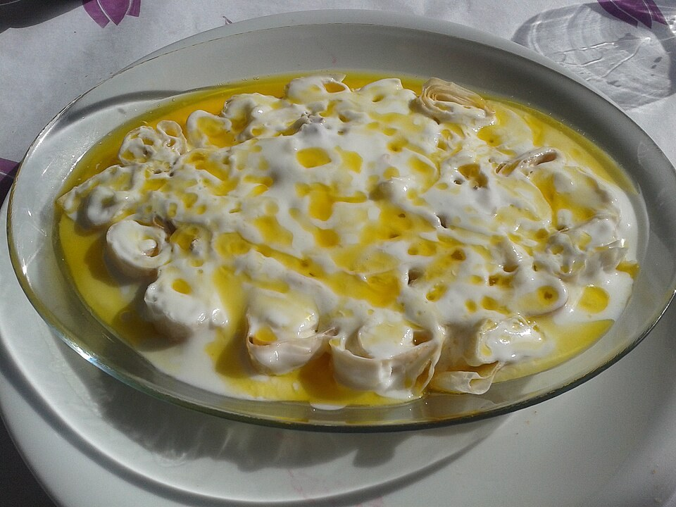

Сач

Садитесь сюда, к окну, тут не дует. Только сразу скажу, чтобы вы не путались: это не мой дом. То есть я в нём родилась, вон в той комнате, где теперь телевизор, но с девяносто восьмого года он принадлежит Лали. Она его купила честно, бумаги я видела сама. Каждый год на Страстной я приезжаю из Салоник, и Лали отдаёт мне свою кухню на два дня, а я пеку сирон на маминой сковороде. Вон она стоит на плите.
Хорошо, что вы русский. С Лали я говорю по-русски, с внуками в Салониках по-гречески, с мамой говорила по-понтийски, а по-русски у нас в Цалке говорили все со всеми, когда своих слов не хватало. Урумы из соседних сёл говорили по-турецки и обижались, если так скажешь: это, мол, наш греческий. Мы в Санте говорили на настоящем греческом, только старом, понтийском, его и в Греции не каждый поймёт. Так что русский был у нас вроде колодца посреди села: свой у каждого во дворе, а воду носили из общего. С вами мне легко, я ничего не перевожу в голове.
Сковорода называется сач. Видите, она не плоская, а выпуклая, как перевёрнутая миска. Железо толстое, одной рукой я её не подниму. Её ставят горбом кверху на огонь, и на горбу пекут лепёшки, тонкие, как бумага. Мама топила под ней кизяком. Это навоз, перемешанный с соломой и высушенный кирпичиками: лес от нас далеко, а зима длинная, так топили все. Лали ставит сач на газ, и я не спорю. Лепёшке всё равно, на чём её пекут, лишь бы жар был ровный.
Про Санту вам, наверное, уже говорили. Есть другая Санта, на Понте, в горах над Трапезундом, теперь туда турки ездят смотреть на развалины. Бабушка Евдокия рассказывала, что там вечный туман, камни и холод. В тысяча восемьсот тридцатом году несколько наших семей ушли оттуда сюда, в Цалку, к русскому царю, а через пять лет остальные написали прошение наместнику: хотим к родственникам. И пришли. Бабушка смеялась: переехали из тумана в туман, зато к своим. Здесь тоже не юг, вы сами видели: в апреле снег ещё лежит по оврагам, а в январе бывает за тридцать.
Сирон тоже оттуда, с Понта. Это тесто, в нём только мука, вода и соль. Мама раскатывала его скалкой в листы, такие, чтобы сквозь лист были видны пальцы, и пекла каждый на саче, недолго с одной стороны и с другой. Потом сворачивала листы трубкой, резала на куски длиной с палец и ставила в печь, пока не порыжеют. Такие кусочки лежат хоть всю зиму, если держать в сухом. Когда надо есть, их заливают кипятком или бульоном, они набухают, а сверху поливают паскитаном с чесноком и горячим маслом. Паскитан мы так называем: кислое молоко откидывают в мешочек, сыворотка стекает, остаётся густое, вроде сметаны с творогом. Его разводят тёплой водой, чтобы лился. Говорят, у турок есть такое же блюдо и называется так же. Ничего удивительного: мы с ними пятьсот лет жили через забор и ели одно и то же, только молились в разных местах.
Отец у меня был каменщик. У нас в Цалке половина мужчин весной уезжали в Россию строить и возвращались к зиме, потому что земля здесь даёт картошку да ячмень, а на картошке не разбогатеешь. Отец приезжал в ноябре, и в тот день мама пекла сирон: он делается быстро, а человека с дороги надо встречать горячим. Я помню, как отец входил, ставил чемодан у порога и шёл первым делом не к нам с братом, а к печке. Мама ругалась и при этом смеялась.
В восемьдесят девятом начали уезжать. Сначала по одному дому в месяц, потом по дому в неделю, потом я перестала считать. Вечерами сидели и говорили только про Грецию. Почти у каждого в Санте там уже кто-то был, писали, что жить можно и что греков из Союза принимают. Ездили в Тбилиси, в греческое консульство. Отец привёз оттуда паспорта, и в них стоял штамп по-гречески: «Παλιννόστηση», «возвращение на родину». Мне было четырнадцать, и я спросила, как это возвращение, если мы там никогда не жили. Отец сказал: «Не умничай. Это они так пишут, чтобы нам было не обидно».
Отец уехал первым, весной девяносто второго, в Салоники к двоюродному брату: строить там тоже было что. Мы с мамой и братом остались ещё на год. Этот год я помню плохо, помню только, что было холодно и темно и мама всё время что-то пересчитывала: ложки, наволочки, деньги. В августе девяносто третьего отец написал, что снял квартиру, и мама сказала: в сентябре.
Последнюю ночь она пекла сирон, всю ночь до утра. Мы с братом спали на полу на матрасах, потому что кровати мама уже раздала соседям, а она стояла у сача. Я просыпалась от запаха горячего хлеба, видела её спину и засыпала, просыпалась опять, а она всё стояла. Утром на столе лежали три наволочки, набитые сироном. Мама сказала: «Первый месяц, пока не устроимся, будем есть это. Там всё будет ихнее, а это наше».
Сач в сумки не влез. Мама клала его, вынимала, пробовала замотать в одеяло и засунуть в мешок с подушками, пока дядя Яннис, сосед, который вёз нас до Тбилиси на своих «Жигулях», не сказал: «Деспина, или сач, или телевизор». Мама поставила сач обратно на печь. Телевизор мы тоже не взяли. Я до сих пор не понимаю, при чём тут был телевизор: он у нас давно не работал. Дом мама продавать не стала. Заперла, а ключ отдала тёте Олимпиаде, жене дяди Янниса, они пока не собирались. Сказала ей: «Мы же будем приезжать».
Наволочки мы доели к Рождеству. Про Салоники я вам много рассказывать не буду, там всё как у всех: отец на стройке, мама убирала чужие квартиры, я доучилась и вышла замуж. Сирон мама и там пекла, в духовке, да и в понтийских лавках его продают сушёным, в пакетиках. Я сейчас не про еду.
Через два года, на Пасху, мама поехала обратно, к своим родителям на кладбище. Одна: отец сказал, что не поедет, и причины не объяснил. Вернулась она через неделю и долго ничего не рассказывала. Потом я узнала от тёти Олимпиады. Дверь была выломана, в доме пусто: унесли печку, оконные рамы, даже проводку из стен выдрали. Кто унёс, никто не знал, в те годы в Цалке пустых домов было больше, чем сторожей. Сача мама не нашла и решила, что его тоже сдали на лом. В дом она больше не заходила. Ночевала у тёти Олимпиады, красила с ней яйца в луковой шелухе, до красного, как у нас положено, и несла их на могилу.
И так она ездила каждую Пасху. Дом стоял без окон, и мама ходила мимо него по другой стороне улицы. В девяносто восьмом тётя Олимпиада написала, что государство выкупает брошенные дома для сванов. У них в горах после оползней целые сёла остались без жилья, и их селили сюда, в наши пустые сёла. «Деспина, люди неплохие, с детьми, продавай, пока ещё стены стоят». Мама продала. Сколько заплатили, она никому не говорила, сказала только, что в Салониках на эти деньги не купишь и балкона.
На следующую Пасху она постучала в свою дверь. Открыла Лали, тогда совсем молодая, с малышом на бедре и ещё двумя за юбкой. Мама сказала по-русски: «Я здесь жила». Лали ответила: «Знаю, заходите», — и поставила чайник. А пока он закипал, сходила в сарай и принесла сач. Они нашли его, когда разбирали старые доски: тот, кто чистил дом, сач вынес, да так и бросил под досками, наверное, тяжело было нести дальше. Лали показала его соседям, тётя Олимпиада сказала, что это Деспинин, и Лали его очистила от ржавчины и припрятала. Сказала маме: «Я не знала, что это, знала только, что не моё».
Мама попросила муки. В тот же вечер она пекла сирон на своей бывшей кухне, дети Лали сидели вокруг и таскали кусочки прямо с противня, не дожидаясь паскитана. Лали смотрела, как мама раскатывает, потом взяла вторую скалку и стала рядом. К ночи она не отпустила маму к тёте Олимпиаде и постелила ей в той самой комнате, где мама двадцать лет проспала с отцом. Сами они с мужем легли на кухне. Мама рассказывала мне, что заснула сразу, как голову положила. А в Салониках она тогда без таблетки не засыпала.
С тех пор она жила на Пасху у Лали, гостьей в собственном доме. Мама учила Лали сирону и паскитану, а Лали маму — кубдари. Это сванский пирог с мясом, мясо для него рубят ножом, а не крутят, и кладут сванскую соль, перетёртую с чесноком и травами. Мама потом пекла кубдари в Салониках и говорила соседкам-гречанкам, что это наш цалкинский пирог. Не спорить же с ними, чей он.
Вы не думайте, что у нас тут все обнимались. В две тысячи пятом в Авранло, это урумское село в нашем районе, напали на греческую семью, потом была драка село на село, приезжала полиция из Тбилиси. Тётя Олимпиада в тот год уехала к сыну в Грецию и сказала, что боится и больше не вернётся. Мама приехала на Пасху как всегда. Я её перед отъездом спросила, не страшно ли ей, и она ответила: «Страшно ехать туда, где тебя никто не ждёт. А меня Лали ждёт, она без меня паскитан перекислит».
Мама умерла десять лет назад, зимой, в Салониках, там и лежит, рядом с отцом. На ту Пасху я никуда ехать не собиралась. В Великий понедельник позвонила Лали, мама оставляла ей наш номер. Поплакала со мной, а потом спросила: «Фотини, а кто мне теперь скажет, что я толсто раскатываю?» Я взяла билет на среду. И с тех пор езжу сама.
Раскатывает она, если честно, давно не толсто. А внучка её, Тамуна, в этом году раскатала тоньше меня, вон её листы лежат, посмотрите на свет. Кот их не трогает, он умный, ему потом паскитана дадут. У Лали в доме сирон едят по воскресеньям, муж её говорит, что это теперь сванское блюдо, и я не спорю. Каждый год, когда я уезжаю, Лали заворачивает сач в одеяло и говорит: «Забирай, он твой». И каждый год я разворачиваю и ставлю обратно на плиту. У меня в Салониках он стоял бы в кладовке и грелся раз в год, а здесь он горячий каждую неделю. Мама его не для кладовки покупала.
Вот, возьмите, я вам насыпала в пакет. Сушёный сирон не испорченный и не чёрствый, он просто ждёт кипятка. Зальёте дома, и через десять минут он опять мягкий, будто только что с сача. Я раньше думала, что с языком так же. Мои внуки в Салониках по-понтийски знают два слова, «мана» и «сирон». Я их и сказками, и бабушкиными песнями отпаивала, а оно не отходит. Язык, оказывается, сохнет по-другому.
И ещё я заметила: вы про Тбилиси говорите «у нас». Я двадцать лет в Салониках говорила «у нас» про Санту, а теперь ловлю себя, что говорю так и про то, и про другое. У вас тоже так будет, увидите. Это не страшно, просто дорог становится вдвое больше.
Пакет вам везти недалеко, до Тбилиси два часа. А если захотите сделать сами, записывайте, как мама говорила: муки сколько тесто возьмёт, воды сколько мука попросит, паскитана чтобы покрыл, а масла не жалеть.
Сирон из Санты
На 4 порции.
Что нужно
мука пшеничная — 500 г
вода — около 250 мл
соль — 8 г для теста и 5 г для заливки
кипяток или мясной бульон — 500–600 мл
паскитан (или густой сцеженный йогурт) — 400 г
тёплая вода для паскитана — 100 мл
чеснок — 3 зубчика
сливочное масло — 80 г
1. Замесите из муки, воды и 8 г соли мягкое тесто и оставьте его под миской на 20 минут.
2. Разделите тесто на 6–8 частей и раскатайте каждую в лист толщиной около 1 мм, так, чтобы сквозь него просвечивали пальцы.
3. Подсушите листы на сухом раскалённом саче или сковороде, по 30–40 секунд с каждой стороны: они должны схватиться, но не зарумяниться.
4. Сверните каждый лист плотной трубкой и нарежьте кусками по 3 см.
5. Уложите куски срезом вверх вплотную друг к другу в противень и запекайте при 200 °C 12–15 минут, до рыжего цвета. На этом этапе сирон можно остудить и хранить в сухом месте: в полотняном мешке он лежит месяцами.
6. Посолите кипяток или бульон и залейте сирон так, чтобы он был покрыт. Через 5–10 минут куски набухнут и станут мягкими.
7. Разведите паскитан тёплой водой до текучести, вмешайте растёртый с солью чеснок и полейте чуть остывший сирон. На горячий не лейте, паскитан свернётся.
8. Растопите масло до орехового запаха и полейте сверху. Подавайте сразу.
Если сирон остался, подсушите его ещё раз в духовке: он подождёт следующего кипятка.
Тбилиси, октябрь 2026